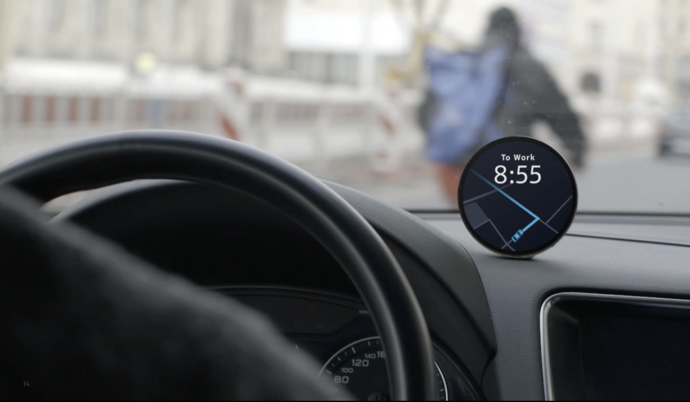
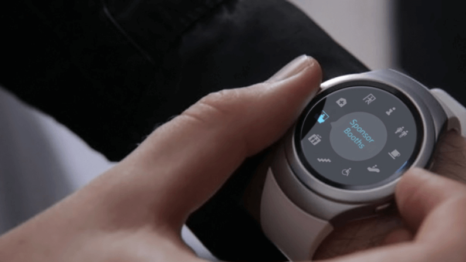
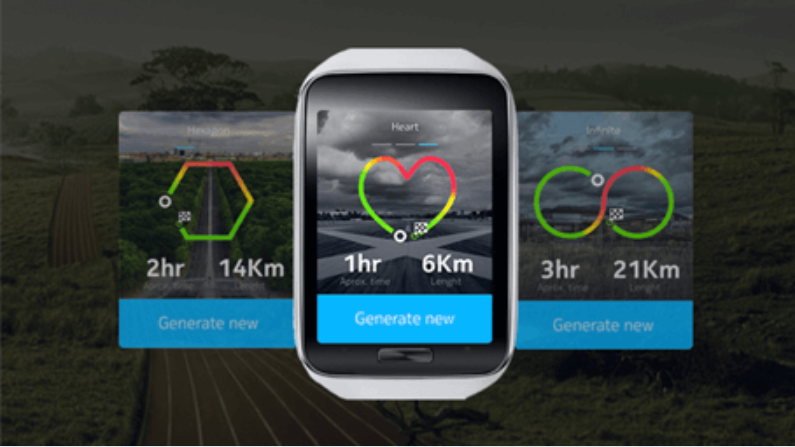
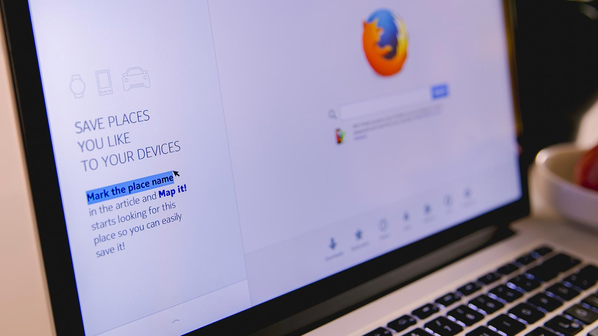
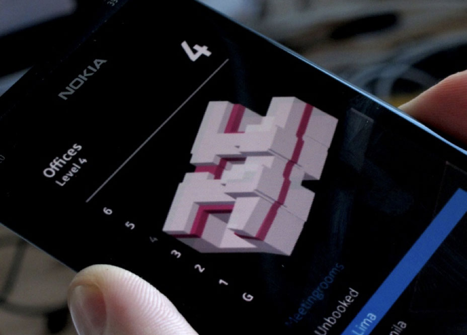
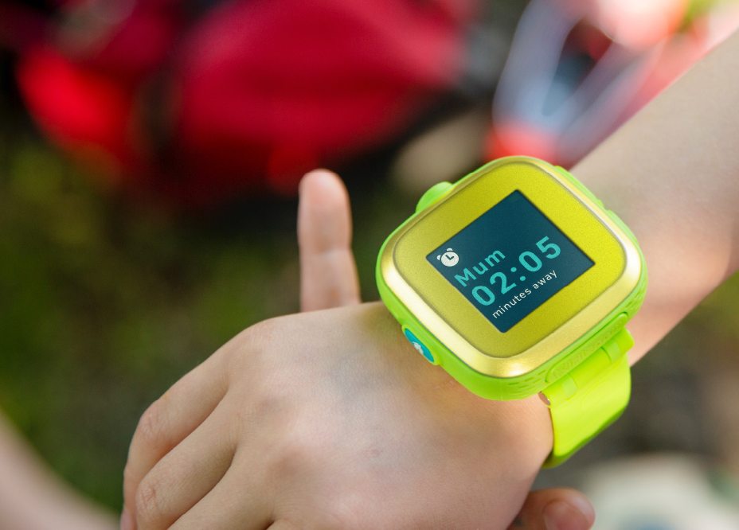
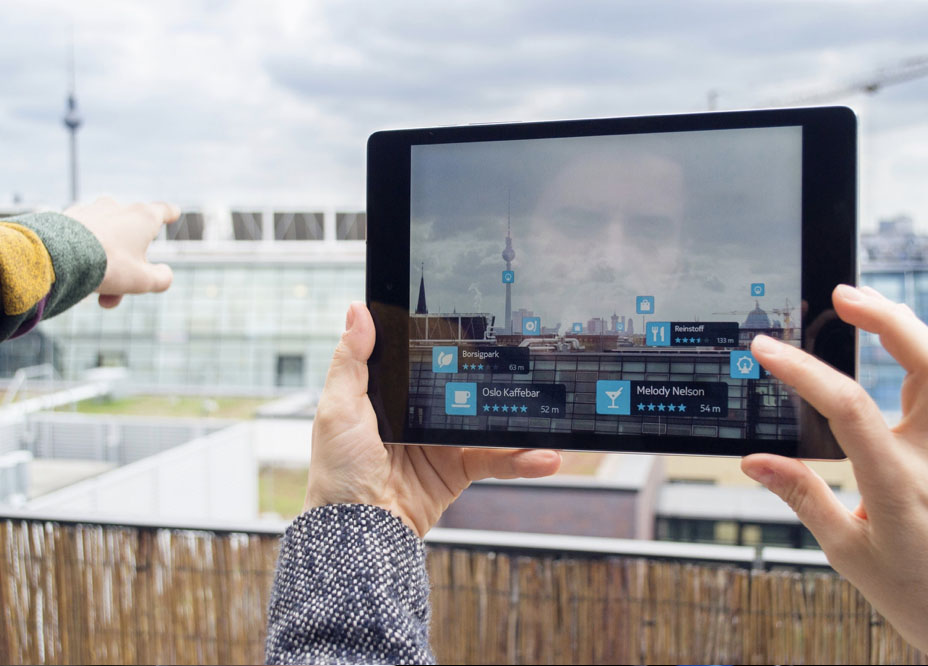
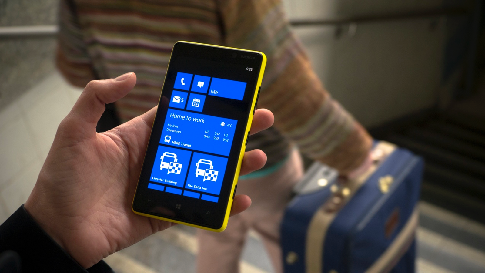
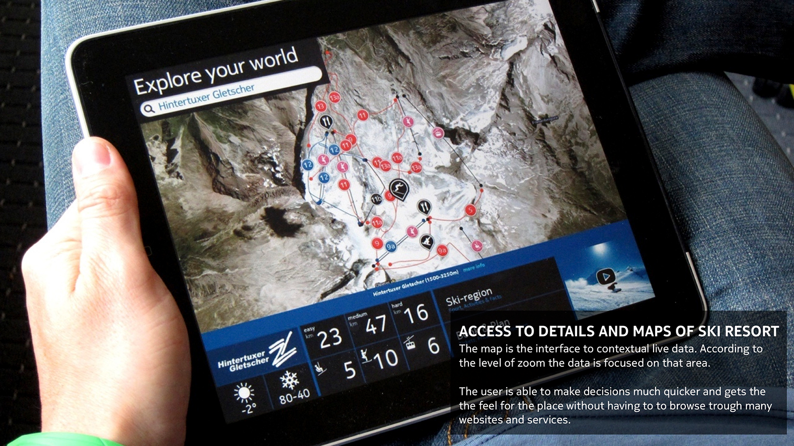
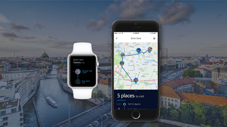

Karen Janssen
I'm a designer and design leader with over 20 years of experience in digital product and service development. My background spans design, research, and innovation across healthcare, mobility, logistics, consumer, and automotive sectors. I've built a broad portfolio of effective solutions for global organisations including Roche, HERE, Nokia, Motorola, Philips, and Skype—always with a focus on usability, relevance, and long-term impact.
LinkedIn
Samsung Conference Venue Maps – HERE Technologies 2016
Venue map experience on Samsung Galaxy and Gear S2, including event-specific information; indoor guidance and sending a meet up position and request via your mobile device to the Gear S2
Samsung Geotargeting – HERE Technologies 2015
A home screen widget and custom HERE Maps experience for Samsung Galaxy S6 which create relevance to Samsung partner deals by geographic proximity, contextual information and personal preferences.

Enhance your Run – HERE Technologies 2015
Find the best running route, be safe on your run, track your progress and reach new limits; enhance your running experience by adding location awareness.

Map it! A place collection – HERE Technologies 2016
A browser extension that makes it easy to search and save places from any website — from your favourite travel blog to your email conversation with a friend. So you always have them on all your devices.

Indoor Maps & Guidance – Nokia / HERE Technologies 2011–2014
Indoor map application and feature development providing more adequate indoor map representations and visualisation for different use cases and content integration.

Kids watch & Parental Companion App – HERE, Huawei, Telekom 2016
A wearable phone and locator for kids, designed with parents in mind — giving them peace of mind, while providing kids the freedom they need to be kids.

Real estate market Scout 24 – HERE Technologies 2015
How can you make location a core differentiator to browse items online? Translating client needs into generative design challenges that bring location awareness to the Scout 24 real estate portfolio.

My Commute for Public Transport – Nokia 2013
‘My Commute’, a feature for the Windows Phone public-transport application, enables the user to save their daily commutes, monitor departure times and report delays and disruptions on the way.
Huawei Location Integration – HERE Technologies 2014
HERE’s location awareness and location-based services for Huawei’s product portfolio. Find the right building, the right entrance and the right venue inside the building.

